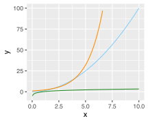
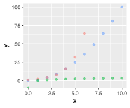
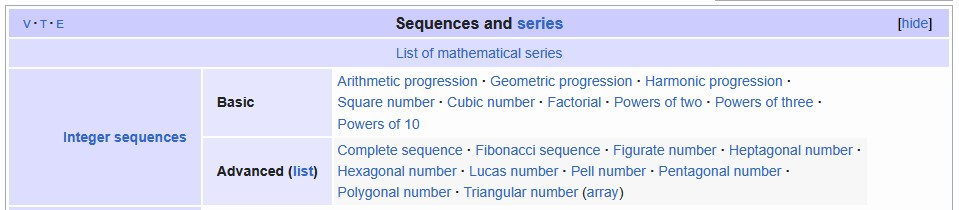
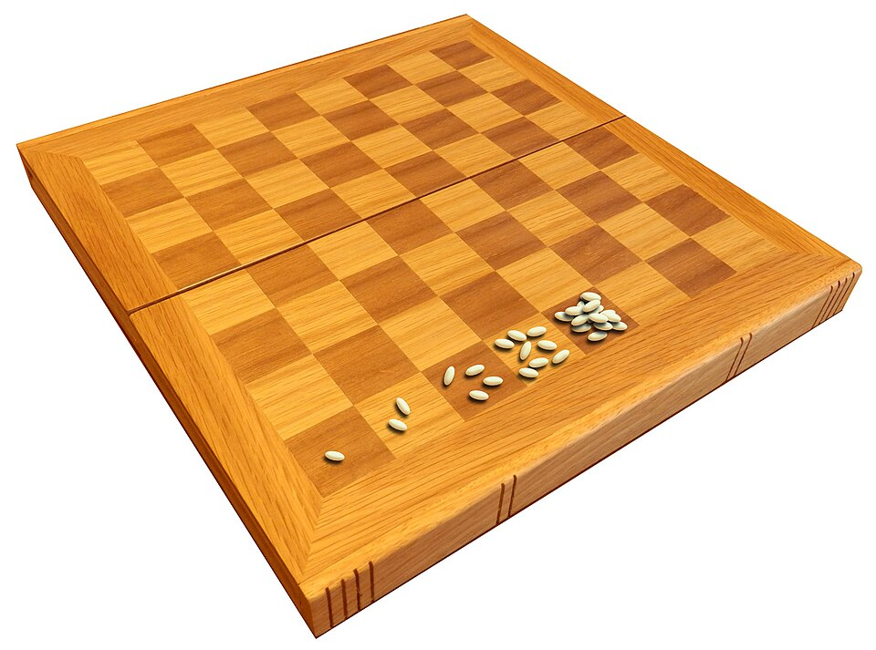

library(ggplot2)Sequences & Series
Lecture 3 - FNDN07012
Domains
Continuous vs Discrete
Powers, exponentials, and logs can measure growth over continuous domains like \(\mathbb{R}\).
ggplot(data.frame(x=c(0, 10)), aes(x=x)) +
stat_function(fun=function(x){x**2}, colour="lightskyblue") +
stat_function(fun=function(x){2**x}, colour="darkorange") +
stat_function(fun=function(x){log(x,2)}, n=1e4, colour="forestgreen") +
ylim(-5,100)
size <- 11
base <- 2
xvals <- 0:(size-1)
dat <- data.frame(
x = rep(xvals, 3),
y = c(xvals**base, base**xvals, log(xvals, base)),
Function = c(rep('x^2', size), rep('2^x', size), rep('log2(x)', size))
)
ggplot(dat, aes(x=x, y=y, colour=Function)) + geom_point(alpha = 0.5) + ylim(-5,100) + theme(legend.position="none")Warning: Removed 34 rows containing missing values or values outside the scale range
(`geom_function()`).
Warning: Removed 4 rows containing missing values or values outside the scale range
(`geom_point()`).
But what about discrete domains like \(\mathbb{Z}\)?
While exponentials and logs are great for modelling continuous growth, we usually use other tools to model discrete growth.
Sequences
Definition
A sequence is a list of numbers following a particular pattern or relation, and we denote these by \(a_1\), \(a_2\), \(a_3\), etc.
Some examples:
| Name | List | Relation |
|---|---|---|
| \(\mathbb{Z}^>\) | 1, 2, 3, 4, 5, \(\ldots\) | \(a_n = n\) |
| Events | 2, 4, 6, 8, 10, \(\ldots\) | \(a_n = 2n\) |
| Odds | 1, 3, 5, 7, 9, \(\ldots\) | \(a_n = 2n - 1\) |
| Squares | 1, 4, 9, 16, 25, \(\ldots\) | \(a_n = n^2\) |
| Powers of 2 | 1, 2, 4, 8, 16, \(\ldots\) | \(a_n = 2^n\) |
| Reciprocals | \(1\), \(\frac{1}{2}\), \(\frac{1}{3}\), \(\frac{1}{4}\), \(\frac{1}{5}\), \(\ldots\) | \(a_n = \frac{1}{n}\) |
| Fibonacci | 3, 3.1, 3.14, 3.141, \(\ldots\) | \(a_n =\) signif(pi, n-1) |
Arithmetic
An arithmetic sequence is defined by repeatedly adding some value \(d\) to an initial \(a_0\) value. That is, \[ a_1 = a_0 + d,\quad a_2 = a_0 + 2d,\quad a_3 = a_0 + 3d,\quad \textit{etc.} \] This can be summarised by \(a_n = a_0 + nd\).
Warning
It varies by resource whether sequences start from \(n = 0\) or \(n = 1\). This isn’t standardised, so always double check! As an example, R’s seq function includes \(a_0\) as the initial value.
# the odd numbers
seq(from=1, by=2, to=20) [1] 1 3 5 7 9 11 13 15 17 19Geometric
A geometric sequence is defined by repeatedly multiplying an initial \(a_0\) by some common ratio \(r\). That is, \[ a_1 = a_0r,\quad a_2 = a_0r^2,\quad a_3 = a_0r^3,\quad \textit{etc.} \] This can be summarised by \(a_n = a_0r^n\).
Warning
Again, it varies whether sequences start from \(n = 0\) or \(n = 1\).1 Always double check!
Other
Arithmetic and geometric aren’t exhaustive!

Could define:
- Any function \(a_n = f(n)\) where \(a_n:\mathbb{Z}^>\rightarrow\mathbb{R}\)
- Recursively, e.g. Fibonacci where \(a_n = a_{n-1} + a_{n-2}\)
- Explicitly, e.g. the prime numbers 2, 3, 5, 7, 11, 13, 17, \(\ldots\)
Series
Definition
Very roughly speaking, a series is the sum of a sequence. This could be finite, as \[ \sum_{m=1}^{n} a_m = a_1 + a_2 + \cdots + a_n \] or infinite, as \[ \sum_{m=1}^{\infty} a_m = a_1 + a_2 + a_3 + \cdots. \] We say a infinite series converges if it has a finite value.
Formulae
Some series have formulae. For example, the sum of the first \(n\) terms of an arithmetic series with terms \(a_n = a_1 + nd\) is \[ \sum_{m=1}^{n} a_m = \frac{n(a_1 + a_n)}{2}. \]
The sum of the first \(n\) terms of a geometric series with terms \(a_n = a_0r^n\) is \[ \sum_{m=0}^{n} a_m = \frac{a_0(1-r^{n+1})}{1-r} \] provided \(r\neq1\). Even infinite series can have formulae! For example, if \(0<r<1\), \[ \sum_{n=0}^{\infty} a_0r^n = \frac{a_0}{1-r}. \]
Wheat and Chessboard
If a chessboard were to have wheat placed upon each square such that one grain were placed on the first square, two on the second, four on the third, and so on (doubling the number of grains on each subsequent square), how many grains of wheat would be on the chessboard at the finish?

{kind=link}
Mathematically, \[ \sum_{n=0}^{63} \left(1~\text{grain} \times 2^n\right) = \frac{1-2^{63+1}}{1-2} = 2^{64} - 1 = 18,\!446,\!744,\!073,\!709,\!551,\!615~\text{grains}! \]
Footnotes
There’s not a geometric equivalent to R’s
seq, but it could be coded usinga0*r**(1:n)or similar.↩︎